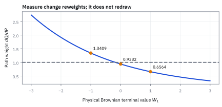

13.6 Girsanov and the Risk-Neutral Measure
เปลี่ยน measure คือให้น้ำหนักใหม่กับเส้นทางราคาเดิมทุกเส้น จนหุ้นโตเฉลี่ยเท่าดอกเบี้ยเงินฝาก แต่แกว่งแรงเท่าเดิม ราคาของสัญญาคือค่าเฉลี่ยของเงินที่สัญญาจ่ายใต้น้ำหนักชุดใหม่ แล้วแปลงกลับเป็นเงินวันนี้ ราคานี้จึงไม่ขึ้นกับว่าใครเชื่อว่าหุ้นจะโตเท่าไร
ลูกค้าคนหนึ่งขอให้โต๊ะเทรดของธนาคาร (ทีมที่ซื้อขายในตลาด) เสนอราคาสัญญาแบบหนึ่ง สัญญานี้เรียกว่า digital option มันจ่ายเงิน \$1 ถ้าอีกหนึ่งปีราคาหุ้นปิดเหนือ \$110 ถ้าไม่ถึงก็ไม่จ่ายอะไรเลย คำถามคือ วันนี้สัญญานี้ควรมีราคากี่ดอลลาร์
ของที่รู้ (ทุกตัวเป็นตัวเลขสมมติ):
- ราคาหุ้นวันนี้ $S_0=\$100$
- เกณฑ์ของสัญญา $K=\$110$ และอายุสัญญา $T=1$ ปี เงินที่สัญญาจ่ายตอนครบปีเขียนว่า $H_T$ ซึ่งเป็น \$1 หรือ \$0
- drift $\mu=12\%$ ต่อปี คือผลตอบแทนเฉลี่ยต่อปีที่แบบจำลองของนักวิเคราะห์เชื่อว่าหุ้นจะให้
- ความผันผวน $\sigma=28\%$ ต่อปี คือขนาดการแกว่งของผลตอบแทนในหนึ่งปี วัดเป็น SD (standard deviation)
- ดอกเบี้ยปลอดความเสี่ยง $r=2\%$ ต่อปี คือดอกเบี้ยของเงินฝากที่ไม่มีความเสี่ยงว่าจะไม่ได้เงินคืน คิดแบบทบต้นต่อเนื่อง เงิน \$1 จึงโตเป็น $e^{rT}$ ดอลลาร์ใน $T$ ปี
เงิน \$1 ที่จะได้ปีหน้ามีค่าน้อยกว่า \$1 วันนี้ เพราะเงินวันนี้เอาไปฝากให้โตได้ การแปลงเงินอนาคตกลับเป็นเงินวันนี้เรียกว่า “คิดลด” เงิน \$1 ปีหน้าจึงมีค่าวันนี้ $e^{-rT}=e^{-0.02}=\$0.9802$
นักวิเคราะห์ใช้แบบจำลองที่หุ้นโต 12% แกว่ง 28% คำนวณโอกาสที่หุ้นจะปิดเหนือ \$110 ได้ 47.93% (ขั้นที่ 7 จะคำนวณตัวเลขนี้ให้ดู) เขาคิดว่าราคาคือเงินที่คาดว่าจะได้ คิดลดกลับมาเป็นเงินวันนี้:
ควรเสนอราคา \$0.4698 นี้ไหม?
ลองตอบก่อนเปิดเฉลย
ไม่ควร ตัวเลขที่ใส่ผิดคือโอกาส ราคาที่ไม่เปิดช่องให้ใครได้เงินฟรีใช้โอกาส 34.13% ไม่ใช่ 47.93% ตัวเลข 34.13% มาจากโลกสมมติที่หุ้นโตเฉลี่ยเท่าดอกเบี้ย 2% (ขั้นที่ 7 คำนวณให้ดู) ราคาที่ถูกจึงเป็น $V_0=e^{-0.02}\times0.3413=\$0.3345$ ห่างจากราคาของนักวิเคราะห์ $0.4698-0.3345=\$0.1353$ ต่อสัญญา
ถ้าโต๊ะยอมซื้อสัญญาที่ \$0.4698 คนอื่นจะขายสัญญาให้โต๊ะ แล้ว hedge ด้วยหุ้น (ซื้อหุ้นจำนวนที่คำนวณไว้ให้กำไรขาดทุนหักล้างกับสัญญา) เขาจะเก็บส่วนต่าง \$0.1353 ต่อสัญญาโดยไม่ต้องเดาว่าหุ้นจะขึ้นหรือลง
อีกเรื่องที่น่าแปลกใจคือ คนที่เชื่อว่าหุ้นโตแค่ 5% ต่อปีก็ได้ราคา \$0.3345 เท่ากัน (ขั้นที่ 8) ราคาที่ถูกจึงไม่ขึ้นกับความเชื่อเรื่อง drift เลย
ภาพรวมก่อนลงสูตร
คนส่วนใหญ่คิดแบบนักวิเคราะห์ในโจทย์ คือ “ราคา = ค่าเฉลี่ยของเงินที่สัญญาจ่าย แล้วคิดลดกลับ” ความคิดนี้ถูกครึ่งหนึ่ง ส่วนที่ยังไม่ได้ตอบคือ ค่าเฉลี่ยนั้นต้องใช้โอกาสชุดไหน
ตัวอย่างที่ง่ายที่สุดช่วยตอบได้โดยไม่ต้องเดา สมมติหุ้นมีทางไปแค่สองทางในงวดเดียว คือขึ้นหรือลง (เรียกว่าต้นไม้หนึ่งงวด) เราสร้างพอร์ตจากหุ้นกับเงินสดให้จ่ายเงินเท่ากับสัญญาทุกกรณี ของสองอย่างที่จ่ายเท่ากันทุกกรณีต้องมีราคาเท่ากัน ไม่อย่างนั้นใครก็ซื้อตัวถูกขายตัวแพงเก็บส่วนต่างฟรีได้ ต้นทุนของพอร์ตจึงเป็นราคาของสัญญา
ตอนคำนวณต้นทุนนั้น โอกาสจริงที่หุ้นจะขึ้นไม่ถูกใช้เลย แต่มีโอกาสชุดใหม่โผล่ออกมาเอง โอกาสชุดนี้ทำให้หุ้นโตเฉลี่ยเท่าเงินฝากพอดี เราเรียกชุดโอกาสของโลกจริงว่า $P$ และเรียกชุดใหม่ว่า risk-neutral measure $Q$ (คำว่า measure ในหน้านี้แปลว่าชุดโอกาสที่ให้กับทุกเหตุการณ์)
ในเวลาต่อเนื่อง ทฤษฎีบทของ Girsanov บอกว่าโลก $Q$ ไม่ต้องสร้างเส้นทางราคาใหม่ ใช้เส้นทางเดิมของโลกจริงทุกเส้นได้ แค่ให้น้ำหนักใหม่กับแต่ละเส้น เส้นที่จบสูงได้น้ำหนักน้อยลง เส้นที่จบต่ำได้น้ำหนักมากขึ้น ผลคือรูปการกระจายของราคาปีหน้าเลื่อนไปทางซ้ายทั้งก้อน แต่ความกว้างเท่าเดิม รูปด้านล่างแสดงคำตอบของโจทย์เปิดเรื่องในภาพเดียว
ลำดับของหน้านี้:
- คิดต้นไม้หนึ่งงวดด้วยมือ แล้วอ่านโอกาสชุดใหม่เป็นน้ำหนักของเส้นทาง
- ขยายไปเวลาต่อเนื่อง จนได้สูตรน้ำหนัก $e^{-\lambda W_T-\frac12\lambda^2T}$ (ตัวอักษรแต่ละตัวจะนิยามในขั้นที่ 3)
- ใช้กฎผลคูณของ Itôหาค่า $\lambda$ ค่าเดียวที่ใช้ได้
- ได้สูตรตั้งราคา แล้วตอบโจทย์ digital
- แสดงว่า drift ของหุ้นหายไปจากราคา แล้วตรวจทุกอย่างด้วยการสุ่มสองแบบ
รูป — การกระจายของราคาปีหน้าในโลกจริงกับในโลกที่ใช้ตั้งราคา
ศัพท์ที่ใช้ในหัวข้อนี้
- Physical measure $P$
- ชุดโอกาสที่พยายามบอกว่าเหตุการณ์จริงเกิดบ่อยแค่ไหน ใช้ทายอนาคต ใช้ทำ stress test (ลองดูว่าพอร์ตเสียหายแค่ไหนในเหตุการณ์ร้าย) และใช้วัดความเสี่ยง เช่น VaR
- Risk-neutral measure $Q$
- ชุดโอกาสที่ใช้ตั้งราคา ใต้ชุดนี้ ราคาที่คิดลดแล้วของทุกสิ่งที่ซื้อขายได้เป็น martingale คือค่าเฉลี่ยของค่าในอนาคตเท่ากับค่าวันนี้ ผลคือหุ้นโตเฉลี่ยเท่าดอกเบี้ยเงินฝาก $Q$ ไม่ใช่คำทายโลกจริง
- Replicating portfolio (พอร์ตเลียนแบบ)
- พอร์ตหุ้นกับเงินสดที่จ่ายเงินเท่ากับสัญญาทุกกรณี ต้นทุนของพอร์ตคือราคาของสัญญา เพราะถ้าสองอย่างนี้ราคาไม่เท่ากัน จะมีคนซื้อตัวถูก ขายตัวแพง แล้วเก็บส่วนต่างฟรี
- Radon–Nikodym derivative $dQ/dP$
- ตัวคูณน้ำหนักของแต่ละเส้นทาง เขียนว่า $Z$ คือน้ำหนักใหม่หารด้วยน้ำหนักเก่า มันใช้แปลงค่าเฉลี่ยใต้ $P$ เป็นค่าเฉลี่ยใต้ $Q$ ได้ด้วยสูตร $\mathbb E^Q[X]=\mathbb E^P[Z\,X]$
- Market price of risk $\lambda$
- $\lambda=(\mu-r)/\sigma$ คือผลตอบแทนที่หุ้นให้เกินดอกเบี้ย หารด้วยความผันผวน ตัวเลขนี้คือ Sharpe ratio ของหุ้น มันบอกว่าต้องเอียงน้ำหนักของเส้นทางมากแค่ไหน หุ้นในโจทย์มี $\lambda=(0.12-0.02)/0.28=0.357$
- Girsanov theorem
- ผลที่ว่า ถ้าให้น้ำหนัก $e^{-\lambda W_T-\frac12\lambda^2T}$ กับทุกเส้นทาง แล้ว $W_t+\lambda t$ จะเป็น Brownian motion ใต้น้ำหนักใหม่ ใช้ย้าย drift ของหุ้นโดยไม่แตะความผันผวน
- Digital option
- สัญญาที่จ่ายเงินก้อนคงที่ ถ้าราคาตอนครบอายุสูงกว่าเกณฑ์ที่ตกลงไว้ ราคาของมันคือโอกาสใต้ $Q$ คิดลด จึงเป็นตัวอย่างที่เห็น $Q$ ชัดที่สุด
สัญลักษณ์และหน่วย
| สัญลักษณ์ | ความหมาย | หน่วย |
|---|---|---|
| $P,\ Q$ | ชุดโอกาสของโลกจริง และชุดโอกาสที่ใช้ตั้งราคา | — |
| $p,\ q$ | โอกาสที่หุ้นขึ้นในต้นไม้หนึ่งงวด ใต้ $P$ และใต้ $Q$ | ไม่มีหน่วย |
| $u,\ d$ | ตัวคูณของราคาหุ้นในต้นไม้ เมื่อหุ้นขึ้นและเมื่อหุ้นลง | ไม่มีหน่วย |
| $R$ | เงิน \$1 ที่ฝากไว้หนึ่งงวดโตเป็น $R$ ดอลลาร์ | ไม่มีหน่วย |
| $S_t,\ \mu,\ \sigma$ | ราคาหุ้นที่เวลา $t$, drift ใต้ $P$, ความผันผวน | ดอลลาร์ต่อหุ้น, ต่อปี, ต่อ $\sqrt{\text{yr}}$ |
| $r$ | ดอกเบี้ยปลอดความเสี่ยงแบบทบต้นต่อเนื่อง | ต่อปี |
| $\lambda$ | market price of risk $(\mu-r)/\sigma$ | ต่อ $\sqrt{\text{yr}}$ |
| $W_t,\ W_t^Q$ | Brownian motion ใต้ $P$ และ $W_t+\lambda t$ ซึ่งเป็น Brownian motion ใต้ $Q$ | $\sqrt{\text{yr}}$ |
| $Z_t$ | น้ำหนักของเส้นทาง $dQ/dP$ ถึงเวลา $t$ | ไม่มีหน่วย |
| $H_T,\ V_0$ | เงินที่สัญญาจ่ายตอนครบอายุ $T$ และราคาของสัญญาวันนี้ | ดอลลาร์ |
ขั้นที่ 1 — ต้นไม้หนึ่งงวด: ราคามาจากการเลียนแบบ ไม่ได้มาจากโอกาสจริง
ก่อนจะไปถึงเวลาต่อเนื่อง ลองดูโลกที่ง่ายที่สุดก่อน หุ้นมีงวดเดียว และงวดหน้ามีราคาได้แค่สองค่า ในโลกนี้เราตั้งราคา call option ได้ด้วยมือ call option คือสิทธิ์ (ไม่ใช่ข้อผูกมัด) ที่จะซื้อหุ้นในราคาที่ตกลงไว้ ราคาที่ตกลงไว้เรียกว่า strike
โจทย์ให้อะไรมาบ้าง (ตัวเลขสมมติ):
- หุ้นวันนี้ $S_0=\$100$
- งวดหน้าหุ้นขึ้นเป็น \$107 หรือลงเป็น \$93.46 เขียนเป็นตัวคูณได้ $u=107/100=1.07$ และ $d=93.46/100=0.9346$
- เงินฝากโต 1% ต่องวด เงิน \$1 จึงโตเป็น $R=1.01$ ดอลลาร์
- call ที่ strike \$102 ถ้าหุ้นขึ้นเป็น \$107 คนถือ call ซื้อหุ้นที่ \$102 ได้กำไร $107-102=\$5$ ถ้าหุ้นลงเป็น \$93.46 ไม่มีใครซื้อแพงกว่าราคาตลาด call จึงจ่าย \$0
แผนคือสร้างพอร์ตที่ถือหุ้น $x$ หุ้น และเงินสด $y$ ดอลลาร์ ($y$ ติดลบแปลว่ากู้เงิน) ให้พอร์ตจ่ายเงินเท่ากับ call ทั้งสองกรณี หุ้นมีค่า $107x$ หรือ $93.46x$ ส่วนเงินสดโตเป็น $1.01y$ จึงได้สมการสองตัว เอาสมการบนลบสมการล่างเพื่อตัด $y$ ทิ้ง:
$C_0$ คือต้นทุนของพอร์ตวันนี้ หุ้น $x$ หุ้นราคาหุ้นละ \$100 บวกเงินสด $y$ ต่อไปลองถามอีกแบบ ถ้ามีโอกาสชุดหนึ่ง $q$ ที่ทำให้หุ้นโตเฉลี่ยเท่าเงินฝากพอดี ($100\to101$) $q$ ต้องเป็นเท่าไร และค่าเฉลี่ยคิดลดของ call ใต้ $q$ เท่ากับเท่าไร:
ถ้าหารสมการแรกด้วย $S_0=100$ ทั้งสองข้าง จะได้สูตรทั่วไป $q=(R-d)/(u-d)$
คำตอบ: call ราคา \$2.76 เพราะมันเท่ากับต้นทุนของพอร์ตที่ถือหุ้น 0.3693 หุ้นและกู้เงินมา \$34.17 พอร์ตนี้จ่ายเงินเท่ากับ call ทุกกรณี ถ้า call ขายแพงกว่า \$2.76 ใครก็ขาย call แล้วซื้อพอร์ต เก็บส่วนต่างฟรี ถ้า call ถูกกว่าก็ทำกลับข้าง
ให้สังเกตว่าตลอดการคำนวณ ไม่มีโอกาสจริง $p$ ที่หุ้นจะขึ้นเลย ลองนึกถึงหุ้นสองตัวที่ราคาวันนี้และราคางวดหน้าเหมือนกันทุกอย่าง แต่ตัวหนึ่งขึ้นด้วยโอกาส 99% อีกตัวขึ้นด้วยโอกาส 1% call ของสองตัวนี้ก็ราคาเดียวกัน แต่ราคาเดียวกันนี้เขียนเป็นค่าเฉลี่ยคิดลดได้ ถ้าใช้โอกาส $q$ แทน $p$
ตรวจเองใน 10 วินาที: พอร์ตต้องจ่าย \$5 เมื่อหุ้นขึ้น และ \$0 เมื่อหุ้นลง
รูป — ต้นไม้หนึ่งงวด: โอกาสจริงกับโอกาสที่ใช้ตั้งราคา
ขั้นที่ 2 — q คือน้ำหนักใหม่ของเส้นทางเดิม
$q$ โผล่ออกมาจากการคำนวณราคา คำถามต่อไปคือ $q$ เป็นโอกาสได้จริงไหม และเกี่ยวกับโอกาสจริง $p$ อย่างไร สมมติว่าโลกจริงให้หุ้นขึ้นด้วยโอกาส $p=0.70$ (ตัวเลขสมมติ) แล้วถามทีละกิ่งว่า ต้องคูณน้ำหนักเดิม $p$ ด้วยเท่าไรจึงได้น้ำหนักใหม่ $q$ ตัวคูณนี้เขียนว่า $Z=dQ/dP$ คือน้ำหนักใหม่หารด้วยน้ำหนักเก่า
ตัวคูณ $Z$ ลดน้ำหนักของกิ่งขึ้นเหลือ 0.7955 เท่า และเพิ่มน้ำหนักของกิ่งลงเป็น 1.4771 เท่า ค่าเฉลี่ยของตัวคูณใต้ $P$ เท่ากับ 1 พอดี น้ำหนักใหม่จึงยังรวมกันได้ 1 และ $Q$ เป็นชุดโอกาสที่ใช้ได้ บรรทัด $\mathbb E^Q[S_1]=\mathbb E^P[Z\,S_1]$ บอกว่าค่าเฉลี่ยใต้ $Q$ หาได้จากเส้นทางเดิมของ $P$ แค่คูณ $Z$ เข้าไปก่อนเฉลี่ย
ใต้ $Q$ หุ้นโตจาก \$100 เป็น \$101 คือโต 1% เท่าเงินฝาก ใต้ $P$ หุ้นโตเป็น \$102.94 คือโต 2.94% ส่วนที่เกินมา $2.94\%-1\%=1.94\%$ คือค่าตอบแทนที่คนถือหุ้นได้เพราะยอมรับความเสี่ยง
ถ้าโลกจริงมี $p=0.99$ ตัวคูณของกิ่งลงจะกลายเป็น $0.4431/0.01=44.31$ แต่ $q$ และราคา call ไม่เปลี่ยนเลย เพราะ $q$ มาจากราคาหุ้นกับดอกเบี้ยเท่านั้น $p$ เปลี่ยนได้แค่ตัวคูณ $Z$
$q$ เป็นโอกาสได้ (อยู่ระหว่าง 0 กับ 1) ก็ต่อเมื่อ $d\lt R\lt u$ ซึ่งที่นี่จริงเพราะ $0.9346\lt1.01\lt1.07$ เงื่อนไขนี้มีความหมาย ถ้าเงินฝากโตเร็วกว่าหุ้นแม้ในกรณีที่หุ้นขึ้น ($R\ge u$) ทุกคนจะ short หุ้น (ยืมหุ้นมาขาย) แล้วเอาเงินไปฝาก ได้กำไรแน่นอน ถ้าหุ้นในกรณีแย่ที่สุดยังชนะเงินฝาก ($R\le d$) ทุกคนจะกู้เงินซื้อหุ้น ดังนั้น “ไม่มีเงินฟรี” กับ “มี $q$ ที่เป็นโอกาสได้” คือเงื่อนไขเดียวกัน ข้อสรุปนี้เรียกว่า first fundamental theorem of asset pricing
ขั้นที่ 3 — น้ำหนักแบบต่อเนื่อง: exponential ของปลายทาง
ต้นไม้หนึ่งงวดมีแค่สองกิ่ง แต่ราคาจริงขยับต่อเนื่อง ขั้นนี้หาว่าน้ำหนักของเส้นทางหน้าตาเป็นอย่างไร เมื่อซอยงวดให้สั้นลงจนเป็นเวลาต่อเนื่อง
ในต้นไม้หลายงวด เส้นทางหนึ่งเส้นคือลำดับของการขึ้นกับการลง น้ำหนักของทั้งเส้นคือผลคูณของตัวคูณทีละงวด ถ้าเส้นทางขึ้น $k$ ครั้งจาก $n$ งวด น้ำหนักคือ $Z_{\text{up}}^{\,k}Z_{\text{down}}^{\,n-k}$ ค่านี้ขึ้นกับ $k$ อย่างเดียว และ log ของมันคือ $k\ln Z_{\text{up}}+(n-k)\ln Z_{\text{down}}$ ซึ่งเป็นเส้นตรงของ $k$
ตำแหน่งปลายทางของเส้นทางก็เป็นเส้นตรงของ $k$ เหมือนกัน ถ้าแต่ละงวดขยับขึ้นหรือลง $h$ ปลายทางคือ $h(2k-n)$ ดังนั้น log ของน้ำหนักเป็นเส้นตรงของปลายทาง
เมื่อซอยงวดจนต่อเนื่อง ปลายทางของเส้นทางคือ $W_T$ ตัวนี้คือ Brownian motion ของโลกจริงตอนเวลา $T$ เป็นตัวสุ่มที่ขับราคาหุ้น และเป็น Normal ที่มีค่าเฉลี่ย 0 กับ variance $T$ ราคาหุ้นเขียนได้ว่า $S_T=S_0e^{(\mu-\frac12\sigma^2)T+\sigma W_T}$ (ดูGeometric Brownian motion) $W_T$ ยิ่งสูง ราคาปลายทางยิ่งสูง
น้ำหนักจึงอยู่ในรูป $Z_T=e^{-\lambda W_T-c}$ โดย $\lambda$ คือความชัน และ $c$ คือค่าคงที่ ค่าคงที่ $c$ ต้องทำให้น้ำหนักเฉลี่ยเป็น 1 เหมือน $\mathbb E^P[Z]=1$ ในขั้นที่ 2 หา $c$ ได้ด้วย moment generating function ของ Normal ซึ่งบอกว่า $\mathbb E[e^{uW_T}]=e^{u^2T/2}$ ใช้กับ $u=-\lambda$ ส่วน $\lambda$ ของหุ้นในโจทย์เปิดเรื่องคือ $(0.12-0.02)/0.28$ ขั้นที่ 5 จะแสดงว่าทำไมต้องเป็นค่านี้ สุดท้ายลองคิดน้ำหนักที่ $T=1$ ของเส้นทางสามเส้น เขียน $Z_1(w)$ แทนน้ำหนักของเส้นทางที่จบที่ $W_1=w$
เส้นทางที่จบที่ $W_1=+1$ (ราคาจบสูง) ถูกลดน้ำหนักราว $1-0.6564=0.34$ คือ 34% เส้นทางที่จบที่ $W_1=-1$ (ราคาจบต่ำ) ถูกเพิ่มน้ำหนักราว $1.3409-1=0.34$ คือ 34% เช่นกัน โลก $Q$ จึงให้น้ำหนักกับเส้นทางที่แย่มากกว่าโลกจริง นี่คือวิธีที่ความเสี่ยงถูกตีราคาเข้าไปในโอกาส
ถ้าลืมค่าคงที่ $c$ น้ำหนักเฉลี่ยจะเป็น $e^{0.063776}=1.0659$ แทนที่จะเป็น 1 ทุกราคาที่คิดด้วยน้ำหนักนั้นจะสูงเกินไป $1.0659-1=6.6\%$
น้ำหนักต้องสอดคล้องกันทุกเวลาด้วย ไม่ใช่แค่ตอนจบ ถ้ามองจากเวลา $s$ ใด ๆ ค่าเฉลี่ยของน้ำหนักปลายทางต้องเท่ากับน้ำหนักที่สะสมมาถึง $s$ วิธีตรวจคือหาว่า $Z_t=e^{-\lambda W_t-\frac12\lambda^2t}$ ขยับอย่างไรในช่วงเวลาสั้น ๆ ด้วย Itô's lemma เขียน $Z_t=f(t,W_t)$ แล้วหาอนุพันธ์ย่อยของ $f$:
ความโค้งของ exponential ให้ $+\tfrac12\lambda^2$ ซึ่งหักกับ $-\tfrac12\lambda^2$ ที่ใส่ไว้ในเลขชี้กำลังพอดี นี่คือเหตุผลที่ค่าคงที่ $c$ ต้องเป็น $\tfrac12\lambda^2T$ ผลคือ $dZ$ ไม่มีส่วน $dt$ เหลือแต่ส่วนสุ่ม $Z$ จึงเป็น Itô integral ซึ่งมีค่าเฉลี่ยคงที่ มองจากเวลาไหน ค่าเฉลี่ยของน้ำหนักปลายทางก็เท่ากับน้ำหนักตอนนั้น ($\mathbb E_s^P[Z_T]=Z_s$) น้ำหนักจึงสอดคล้องกันทุกเวลา
รูป — เส้นทางเดิม น้ำหนักใหม่

ขั้นที่ 4 — ใต้ Q ระฆังของ W เลื่อนไป แต่ความกว้างเท่าเดิม
รู้น้ำหนักแล้ว ต่อไปอยากรู้ว่าใต้ $Q$ ปลายทาง $W_T$ มีรูปการกระจายแบบไหน density ของ $W_T$ ใต้ $Q$ คือ density ใต้ $P$ คูณน้ำหนัก $Z_T$ ใต้ $P$ ปลายทางเป็น Normal ค่าเฉลี่ย 0 variance $T$ จึงมี density $\frac{1}{\sqrt{2\pi T}}e^{-w^2/(2T)}$ ทั้ง density และน้ำหนักเป็น exponential จึงรวมเลขชี้กำลังเข้าด้วยกันได้ แล้วจัดให้เป็นกำลังสองสมบูรณ์ แบบเดียวกับที่ใช้หาราคาคาดหวังของ GBM
เลขชี้กำลังที่ได้คือของ Normal ที่มีจุดกลาง $-\lambda T$ และ variance $T$ เท่าเดิม ตัวคูณข้างหน้า $\frac{1}{\sqrt{2\pi T}}$ ไม่เปลี่ยน ใต้ $Q$ ระฆังของ $W_T$ จึงกว้างเท่าเดิม แค่จุดกลางเลื่อนจาก 0 ไปที่ $-\lambda T=-0.357$ (เมื่อ $T=1$) การให้น้ำหนักใหม่แบบนี้ย้ายแค่จุดกลาง ไม่แตะความกว้าง
ถ้าบวก $\lambda t$ กลับเข้าไป ก็ได้ตัวสุ่ม $W_t^Q$ ที่จุดกลางกลับมาอยู่ที่ 0 อีกครั้ง การคำนวณนี้ดูแค่ปลายทาง ทฤษฎีบทของ Girsanov (ยกมาใช้ โดยพิสูจน์ด้วยการทำแบบเดียวกันกับทุกช่วงเวลาย่อย) บอกว่าทั้งเส้นทาง $W_t^Q$ เป็น Brownian motion ใต้ $Q$ คือการขยับแต่ละช่วงยังไม่เกี่ยวกัน และยังมี variance เท่ากับความยาวช่วง
รูป — ปลายทางเดิม น้ำหนักเทไปทางซ้าย
ขั้นที่ 5 — หา λ ด้วยกฎผลคูณ: ราคาหุ้นที่คิดลดต้องไม่มี drift ใต้ Q
จนถึงตอนนี้ เราใส่ค่า $\lambda$ ไปก่อนโดยยังไม่บอกว่ามาจากไหน ขั้นนี้หาค่าของมัน ในต้นไม้ $q$ ถูกกำหนดด้วยเงื่อนไขเดียว คือใต้ $Q$ หุ้นต้องโตเฉลี่ยเท่าเงินฝาก เวลาต่อเนื่องก็ใช้เงื่อนไขเดียวกัน
วิธีเขียนเงื่อนไขนี้คือดูราคาหุ้นที่คิดลดแล้ว $\tilde S_t:=e^{-rt}S_t$ คือราคาหุ้นที่แปลงกลับเป็นเงินของวันนี้ ถ้าหุ้นโตเฉลี่ยเท่าเงินฝาก $\tilde S_t$ ต้องมีค่าเฉลี่ยคงที่ใต้ $Q$ คือไม่มี drift แต่ค่าเฉลี่ยใต้ $Q$ หาได้จากค่าเฉลี่ยใต้ $P$ ของ $Z\tilde S$ (สูตร $\mathbb E^Q[X]=\mathbb E^P[Z\,X]$ ในขั้นที่ 2) เงื่อนไขจึงกลายเป็น $Z\tilde S$ ต้องไม่มี drift ใต้ $P$
ของที่ใช้มีสองอย่าง อย่างแรก $dZ=-\lambda Z\,dW$ จากขั้นที่ 3 อย่างที่สอง ใต้ $P$ หุ้นขยับตาม $dS=S(\mu\,dt+\sigma\,dW)$ ราคาที่คิดลดจึงขยับตาม $d\tilde S=e^{-rt}dS-re^{-rt}S\,dt=\tilde S\big((\mu-r)\,dt+\sigma\,dW\big)$ จากนั้นใช้กฎผลคูณกับ $Z$ และ $\tilde S$ แล้วรวมเฉพาะส่วน $dt$ (ส่วนนี้คือ drift):
drift มาจากสองที่เท่านั้น พจน์ $\tilde S\,dZ$ ไม่มี drift เพราะ $dZ$ มีแต่ส่วนสุ่ม พจน์ $Z\,d\tilde S$ ให้ $\mu-r$ และพจน์ไขว้ $dZ\,d\tilde S$ ให้ $-\lambda\sigma$ (เพราะ $dW\,dW=dt$) สองพจน์นี้ต้องหักกันพอดี จึงมี $\lambda$ ได้ค่าเดียว ไม่ใช่ค่าที่ใครเลือกตามความเห็น
สามบรรทัดสุดท้ายเขียนหุ้นใหม่ด้วยตัวสุ่มของโลก $Q$ เพราะ $W^Q_t=W_t+\lambda t$ จึงแทน $dW=dW^Q-\lambda\,dt$ ได้ drift ของหุ้นกลายเป็น $\mu-\sigma\lambda=0.12-0.28\times0.357143=0.02=r$ ใต้ $Q$ หุ้นจึงโตเฉลี่ยเท่าดอกเบี้ย ส่วนความผันผวน $\sigma$ ยังเป็น 28% เท่าเดิม
ถ้าหุ้นจ่ายเงินปันผล (เงินที่บริษัทแบ่งกำไรให้ผู้ถือหุ้น) ต่อเนื่องในอัตรา $c$ ต่อปี คนถือหุ้นได้ทั้งราคาที่ขึ้นและเงินปันผล ผลรวมสองก้อนนี้ต่างหากที่ต้องโตเท่าเงินฝาก ใต้ $Q$ ราคาหุ้นอย่างเดียวจึงมี drift $r-c$ (ดูเงินปันผลในสูตรราคา) ต้นไม้ก็ใช้หลักเดียวกัน ถ้าหุ้นจ่ายปันผล $c$ เท่าของราคาต่องวด เงื่อนไข $qu+(1-q)d+c=R$ ให้ $q=(R-c-d)/(u-d)$
ขั้นที่ 6 — สูตรตั้งราคา: ค่าเฉลี่ยใต้ Q แล้วคิดลด
ตอนนี้มีโลก $Q$ ครบแล้ว ขั้นนี้เปลี่ยนมันเป็นสูตรตั้งราคา ในต้นไม้หนึ่งงวด พอร์ตเลียนแบบพิสูจน์ว่าราคาคือค่าเฉลี่ยใต้ $q$ แล้วคิดลด ในเวลาต่อเนื่องหลักเดียวกันคือ ราคาที่คิดลดแล้วของทุกสิ่งที่ซื้อขายได้เป็น martingale ใต้ $Q$ หน้านี้ยกข้อนี้มาใช้ ส่วนพอร์ตเลียนแบบของ Black–Scholesจะสร้างพอร์ตที่ทำให้มันเป็นจริง
ใช้สมบัตินี้กับสัญญาที่จ่าย $H_T$ ตอนเวลา $T$ ราคาวันนี้ $V_0$ ต้องเท่ากับค่าเฉลี่ยใต้ $Q$ ของ $e^{-rT}H_T$ ตัวคิดลด $e^{-rT}$ ดึงออกนอกค่าเฉลี่ยได้เพราะดอกเบี้ยคงที่ จากนั้นตรวจสูตรกับของสองอย่างที่รู้ราคาอยู่แล้ว คือหุ้นเอง และสัญญา forward สัญญา forward คือข้อตกลงวันนี้ว่าจะซื้อหุ้นปีหน้าในราคา $G_0$ ที่ตกลงกันไว้ วันนี้ไม่มีใครจ่ายเงินให้ใคร มูลค่าของมันวันนี้จึงเป็นศูนย์ ค่าเฉลี่ยของหุ้นใต้ $Q$ ใช้สูตร $\mathbb E[S_T]=S_0e^{gT}$ เมื่อหุ้นโต $g$ ต่อปี (ดูราคาคาดหวังของ GBM) โดยใต้ $Q$ ใส่ $g=r$
สูตรผ่านการตรวจกับหุ้น ใต้ $Q$ หุ้นโตเฉลี่ย 2% เป็น \$102.02 เท่ากับฝากเงินเฉย ๆ คิดลดกลับได้ \$100 พอดี ซึ่งคือราคาหุ้นวันนี้
สูตรให้ราคา forward ด้วย forward มีมูลค่าศูนย์วันนี้ ค่าเฉลี่ยคิดลดของ $S_T-G_0$ จึงต้องเป็นศูนย์ ได้ $G_0=\$102.02$ ซึ่งคือค่าเฉลี่ยใต้ $Q$ ไม่ใช่ใต้ $P$
ค่าเฉลี่ยใต้ $P$ คือ \$112.75 ตัวเลขนี้เป็นคำทายราคาปีหน้าที่ดีกว่า (ถ้าเชื่อ drift 12%) แต่คิดลดแล้วได้ \$110.52 ซึ่งไม่ใช่ราคาของอะไรเลย หุ้นวันนี้ราคา \$100 ไม่ใช่ \$110.52
ขั้นที่ 7 — คำตอบของโจทย์เปิดเรื่อง: digital ที่ \$110 ในสองโลก
ตอนนี้มีทุกอย่างพอจะตอบโจทย์เปิดเรื่องแล้ว สัญญาจ่าย \$1 ถ้า $S_1\gt110$ และจ่าย \$0 ถ้าไม่ถึง ค่าเฉลี่ยของเงินที่จ่ายจึงเท่ากับโอกาสที่ $S_1\gt110$ พอดี งานที่เหลือคือหาโอกาสนี้ในสองโลก
โจทย์ให้อะไรมาบ้าง:
- log ของผลตอบแทนทั้งปี $\ln(S_1/S_0)$ เป็น Normal ที่มี SD เท่ากับความผันผวน $\sigma=0.28$ (เพราะ $T=1$) ทั้งสองโลก
- จุดกลางของมันคือ drift ลบ $\tfrac12\sigma^2$ ส่วนที่หักออกนี้มาจากItô's lemmaกับ log ราคา และมีค่า $\tfrac12\sigma^2=\tfrac12(0.28)^2=0.0392$
- ใต้ $P$ drift คือ $\mu=0.12$ ใต้ $Q$ drift คือ $r=0.02$ (ขั้นที่ 5)
- $\Phi$ คือโอกาสสะสมของ Normal distribution มาตรฐาน $1-\Phi(z)$ จึงเป็นโอกาสที่ค่าสุ่มเกิน $z$
หุ้นปิดเหนือ \$110 เมื่อ $\ln(S_1/S_0)\gt\ln(110/100)$ แปลงเกณฑ์นี้เป็นจำนวน SD ห่างจากจุดกลาง แล้วอ่านโอกาสจาก $\Phi$ เขียน $m_P$ และ $m_Q$ แทนจุดกลางของ log ผลตอบแทนใต้ $P$ และใต้ $Q$:
คำตอบ: ราคาคือ \$0.3345 ไม่ใช่ \$0.4698 โอกาสสองตัวต่างกันราว $47.93-34.13=13.8$ จุด ทั้งที่เกณฑ์และความผันผวนเหมือนกัน ต่างกันแค่จุดกลาง ในรูปภาพรวม นี่คือพื้นที่ส้มเทียบกับพื้นที่น้ำเงินทางขวาของเส้นประ
ตัวเลข 34.13% จะกลับมาอีกครั้งในสูตร Black–Scholes ในชื่อ $\Phi(d_2)$ มันคือโอกาสใต้ $Q$ ไม่เคยเป็นโอกาสที่หุ้นจะปิดเหนือ \$110 ในโลกจริง
ตรวจเองใน 10 วินาที: $e^{-0.02}\approx0.9802$ และ $0.9802\times0.3413=0.3345$
ขั้นที่ 8 — drift ของหุ้นหายไปจากราคา
นักวิเคราะห์อีกคนเชื่อว่าหุ้นตัวนี้โตแค่ $\mu=5\%$ ต่อปี ไม่ใช่ 12% ถ้าราคาที่ถูกขึ้นกับความเชื่อเรื่อง drift สองคนนี้จะเสนอราคาต่างกัน ลองคิดใหม่ทั้งสองโลกด้วยความเชื่อนี้ โดยใช้สูตรเดียวกับขั้นที่ 7 จุดกลางใต้ $P$ เปลี่ยนเป็น $0.05-0.0392=0.0108$ ส่วนจุดกลางใต้ $Q$ ยังเป็น $m_Q=0.02-0.0392=-0.0192$ เพราะไม่มี $\mu$ อยู่ในนั้นเลย
สองคนเห็นต่างเรื่องโลกจริง คนหนึ่งได้โอกาส 47.93% อีกคนได้ 38.14% แต่ทั้งคู่ได้โลก $Q$ เดียวกัน และราคาเดียวกัน \$0.3345 เหตุผลคือใต้ $Q$ drift ของหุ้นถูกแทนด้วย $r$ เสมอ ไม่ว่า $\mu$ เดิมจะเป็นเท่าไร ความเห็นเรื่อง $\mu$ เปลี่ยนได้แค่ $\lambda$ ($0.357$ หรือ $0.107$) และ $\lambda$ ก็หักล้างตัวเองออกไปตอนแปลงกลับเป็น drift $\mu-\sigma\lambda=r$ เรื่องนี้เหมือนในต้นไม้ ที่ $p$ เปลี่ยนแค่ตัวคูณ $Z$ แต่ไม่เปลี่ยน $q$
แล้วถ้าเลือก $\lambda$ ผิดล่ะ ลองใส่ $\lambda$ สองค่าที่ไม่ใช่ $0.357$ ให้หุ้นของโจทย์เปิดเรื่อง ($\mu=0.12$) แล้วดู drift ใต้น้ำหนักใหม่ $\mu-\sigma\lambda$ เทียบกับดอกเบี้ย $r=0.02$:
ถ้าเลือก $\lambda$ ผิด หุ้นในโลกที่ใช้ตั้งราคาจะโตเร็วหรือช้ากว่าเงินฝาก ที่ $\lambda=0$ หุ้นโต 12% ขณะที่กู้เงินได้ที่ 2% ราคาที่คิดจากโลกนั้นจึงเปิดช่องให้คนกู้เงินมาซื้อหุ้น แล้วได้ส่วนเกินฟรี ที่ $\lambda=0.5$ ผิดในทางกลับกัน หุ้นโต −2% ช้ากว่าเงินฝาก ราคาที่คิดจากโลกนั้นเปิดช่องให้คน short หุ้นแล้วเอาเงินไปฝาก มีค่า $\lambda$ เดียว คือ $0.357$ ที่ปิดช่องทั้งสองทาง
รูป — ราคาที่ถูกไม่ขยับตามความเชื่อเรื่อง drift
ขั้นที่ 9 — ตรวจด้วยการสุ่มสองทาง
ทุกอย่างก่อนหน้านี้มาจากสูตร ขั้นนี้ตรวจด้วยการสุ่มจริง ถ้าการให้น้ำหนักใหม่ถูกต้อง การสุ่มในโลกจริงแล้วถ่วงน้ำหนัก ต้องได้ตัวเลขเดียวกับการสุ่มในโลก $Q$ ตรง ๆ
โจทย์ให้อะไรมาบ้าง: โค้ดท้ายหน้าสุ่มปลายทาง $W_1$ ของโลกจริง 200,000 ครั้ง ด้วย seed 136 (seed คือเลขตั้งต้นของเครื่องสุ่ม ใช้ seed เดิมก็ได้ผลเดิมทุกครั้ง) แล้วตรวจสองแบบ
- แบบที่หนึ่ง ใช้เส้นทางของโลกจริง คูณแต่ละเส้นด้วยน้ำหนัก $Z_1$ แล้วเฉลี่ย
- แบบที่สอง สุ่มราคาชุดใหม่ ให้หุ้นโตด้วย drift $r$ ตรง ๆ แล้วนับว่ากี่ครั้งที่ปิดเหนือ \$110
คอลัมน์สุดท้ายบอกว่าค่าที่สุ่มได้ห่างจากทฤษฎีกี่ SE (standard error คือขนาดความคลาดเคลื่อนตามปกติของค่าเฉลี่ยที่ได้จากการสุ่ม) ห่างไม่เกินราว 2 SE ถือว่าเข้ากันดี
| ค่า | ทฤษฎี | ได้จากการสุ่ม | ห่างกี่ SE |
|---|---|---|---|
| ค่าเฉลี่ยของ $Z_1$ | 1 | 0.99998 | 0.0 |
| $\mathbb E^P[Z_1S_1]$ | 102.020 | 102.023 | +0.1 |
| ค่าเฉลี่ยของ $Z_1$ คูณเงินที่ digital จ่าย | 0.3413 | 0.3416 | +0.4 |
| สัดส่วน $S_1\gt110$ ไม่ถ่วงน้ำหนัก | 0.4793 | 0.4795 | — |
| สัดส่วนเมื่อสุ่มด้วย drift $r$ | 0.3413 | 0.3417 | — |
คำตอบ: เส้นทางชุดเดียวกันให้ 47.95% ถ้านับตรง ๆ และให้ 34.16% ถ้าถ่วงน้ำหนัก ตัวเลขหลังตรงกับการสุ่มใหม่ในโลกที่หุ้นโตเท่าดอกเบี้ย (34.17%) และตรงกับสูตร (34.13%) นี่คือความหมายของการเปลี่ยน measure ไม่ต้องสร้างเส้นทางใหม่ แค่ชั่งน้ำหนักเส้นทางเดิมใหม่
ตรวจเองใน 10 วินาที: SE ของสัดส่วนที่ไม่ถ่วงน้ำหนัก (แถวที่สี่) ใช้สูตร SE ของสัดส่วน $\sqrt{p(1-p)/n}$ กับ $p\approx0.48$ และ $n=200{,}000$ ค่าที่สุ่มได้แบบไม่ปัดคือ 0.479465 ส่วนทฤษฎีคือ 0.479335
ความผิดที่ให้ตัวเลขผิดโดยไม่มีใครเตือน
ตั้งราคาด้วยโอกาสใต้ $P$: ความผิดคือเอาโอกาสของโลกจริงมาคิดลดเป็นราคา digital จึงถูกเสนอแพงเกินไปราว 40%
ถ้าโต๊ะเสนอซื้อที่ \$0.4698 คนอื่นจะขายให้ แล้ว hedge ด้วยหุ้น ได้ $0.4698-0.3345=\$0.1353$ ต่อสัญญาโดยไม่ต้องรับความเสี่ยงของหุ้น
วัดความเสี่ยงใต้ $Q$: ความผิดคือเอาโลก $Q$ ไปใช้วัดความเสี่ยง ตัววัดที่ใช้กันคือ VaR 95% คือขนาดขาดทุนที่ 95 ครั้งจาก 100 ครั้งจะไม่หนักกว่านี้ สำหรับหุ้นหนึ่งหุ้นที่ถือไว้หนึ่งปี VaR คือราคาวันนี้ลบราคาที่ quantile 5% (ราคาที่มีโอกาสแค่ 5% จะต่ำกว่า) ราคานี้อยู่ต่ำกว่าจุดกลางของ log ผลตอบแทน 1.645 SD (1.645 มาจากตาราง Normal) ใต้ $P$ จุดกลางคือ $0.0808$ ใต้ $Q$ คือ $-0.0192$ (ขั้นที่ 7) และ $1.645\times0.28=0.4606$
VaR ที่ถูกคือ \$31.60 ใต้ $P$ ถ้าใช้ $Q$ จะรายงานเป็น \$38.11 เกินจริงราว 21% เพราะโลก $Q$ ถูกตั้งให้หุ้นโตแค่ 2% ไม่ใช่ 12%
อ่าน $Q$ เป็นคำทาย: ความผิดคือคิดว่า $Q$ บอกอนาคต ลองดู median ของราคาปีหน้า (ราคาที่ครึ่งหนึ่งของเส้นทางจบต่ำกว่า) ซึ่งคือ $S_0e^{m}$ เมื่อ $m$ คือจุดกลางของ log ผลตอบแทน
median ใต้ $Q$ ต่ำกว่าราคาวันนี้ \$100 ถ้าอ่านเป็นคำทาย ก็คือบอกว่าหุ้นที่โตเฉลี่ย 12% น่าจะลง ซึ่งไม่มีใครเชื่อ $Q$ ไม่ได้มีไว้ทาย ระยะ \$10.32 ระหว่างสอง median คือระยะที่ความเสี่ยงถูกตีราคาเข้าไปในน้ำหนัก
ลืม $-\tfrac12\lambda^2T$ ในน้ำหนัก: ความผิดคือใช้น้ำหนัก $e^{-\lambda W_T}$ เฉย ๆ น้ำหนักเฉลี่ยจึงเป็น $e^{0.063776}=1.0659$ ไม่ใช่ 1 (ขั้นที่ 3) ราคา digital ที่คิดจากน้ำหนักนี้กลายเป็น $0.33452\times1.06585=\$0.3566$ (ใช้ทศนิยมห้าตำแหน่งเพื่อไม่ให้การปัดเศษเพี้ยน) สูงเกินราว 6.6% และทุกราคาในระบบเพี้ยนขึ้นเท่ากัน
ใช้ทำอะไรบนโต๊ะจริง
ทุกระบบตั้งราคา derivative (สัญญาที่มูลค่าขึ้นกับราคาของอย่างอื่น เช่น option) ใช้ $Q$ ระบบจะสุ่มเส้นทางด้วย drift $r$ (หรือถ่วงน้ำหนักเส้นทางเดิม) เฉลี่ยเงินที่สัญญาจ่าย แล้วคิดลด ส่วนระบบวัดความเสี่ยง เช่น VaR และ expected shortfall ใช้ $P$ ทีมที่ใช้ระบบเดียวทำทั้งสองงานต้องแยกให้ชัดว่า drift ที่ใส่เป็นตัวไหน
$Q$ ไม่ได้เป็นแค่ทฤษฎี ราคา option ในตลาดบอก $Q$ ให้เห็นได้ เขียน $C(K)$ แทนราคา call ที่ strike $K$ วันนี้ แล้วประกอบพอร์ตชื่อ butterfly คือซื้อ call ที่ strike $K-h$ หนึ่งตัว ขาย call ที่ strike $K$ สองตัว และซื้อ call ที่ strike $K+h$ หนึ่งตัว พอร์ตนี้จ่ายเงินเฉพาะเมื่อราคาปลายทางอยู่ระหว่าง $K-h$ กับ $K+h$ และกราฟเงินที่จ่ายเป็นสามเหลี่ยมสูง $h$ ฐานกว้าง $2h$ มีพื้นที่ $h^2$
ราคาของพอร์ตใด ๆ คือค่าเฉลี่ยใต้ $Q$ ของเงินที่จ่าย แล้วคิดลด (ขั้นที่ 6) เมื่อ $h$ เล็ก density ใต้ $Q$ ในช่วงแคบ ๆ รอบ $K$ แทบคงที่ ราคาของ butterfly จึงเท่ากับ density ใต้ $Q$ ที่ $K$ คูณพื้นที่สามเหลี่ยม $h^2$ แล้วคิดลด ถ้าหารทั้งสองข้างด้วย $h^2$ แล้วให้ $h$ เล็กลง ด้านซ้ายกลายเป็นอนุพันธ์อันดับสองของราคา call:
ทำนองเดียวกัน ถ้าซื้อ call ที่ strike $K$ และขาย call ที่ strike $K+h$ พอร์ตนี้จ่าย $h$ เมื่อหุ้นปิดเหนือ $K+h$ จ่ายน้อยกว่านั้นในช่วงแคบ ๆ ระหว่าง $K$ กับ $K+h$ และไม่จ่ายเลยเมื่อหุ้นปิดต่ำกว่า $K$ หารด้วย $h$ แล้วให้ $h$ เล็กลง ก็ได้ digital ที่จ่าย \$1 ราคาของ digital จึงเป็น $\big(C(K)-C(K+h)\big)/h$ ซึ่งเข้าใกล้ $-\partial C/\partial K$
ตัวอย่างที่ใช้กันบ่อยแสดงว่าเรื่องนี้สำคัญ ของที่รู้ (ตัวเลขสมมติ):
- ดอกเบี้ย $r=0$ หุ้น $S_0=\$100$ อายุ $T=1$ ปี และ digital จ่าย \$1 ถ้าหุ้นปิดเหนือ $K=\$100$
- ความผันผวน at-the-money $\sigma=25\%$ คือความผันผวนที่ตลาดใช้ตั้งราคา option ที่ strike เท่าราคาหุ้นวันนี้
- skew คือการที่ตลาดใช้ความผันผวนต่างกันในแต่ละ strike ที่นี่ความผันผวนลด 2.5 จุดเมื่อ strike ขึ้น 10% ของ \$100 คือ \$10 จึงได้ $\partial\sigma/\partial K=-0.025/10=-0.0025$ ต่อดอลลาร์
ราคา call ในตลาดคือสูตร Black–Scholes $C_{\text{BS}}(K,\sigma)$ ที่ใส่ความผันผวนของ strike นั้น เมื่อ $K$ ขยับ $\sigma$ ก็ขยับตาม chain rule จึงให้สองก้อน ก้อนแรก $-\partial C_{\text{BS}}/\partial K=e^{-rT}\Phi(d_2)$ ก้อนที่สองมี vega $=\partial C_{\text{BS}}/\partial\sigma=S_0\varphi(d_1)\sqrt T$ คือราคา call เปลี่ยนเท่าไรเมื่อความผันผวนเปลี่ยนหนึ่งหน่วย ($\varphi$ คือ density ของ Normal มาตรฐาน) สูตรของ $d_1$, $d_2$ และสองก้อนนี้มาจากสูตร Black–Scholes ที่นี่ $\ln(S_0/K)=0$ และ $e^{-rT}=1$:
digital นี้ราคาราว \$0.55 ต่อเงินที่จ่าย \$1 ถ้าใช้สูตร Black–Scholes ที่ไม่สน skew จะได้แค่ $\Phi(-0.125)=\$0.45$ ต่ำไปราว $0.55-0.45=0.10$ คือ 10 จุด เหตุผลคือ skew ทำให้ call ที่ strike สูงกว่าใช้ความผันผวนต่ำกว่า จึงถูกลงไปอีก ราคา call จึงลดลงเร็วกว่าเดิมเมื่อ $K$ ขึ้น และราคา digital ก็คืออัตราที่ราคา call ลดลงนั่นเอง
ในหน้านี้ความเสี่ยงมีแหล่งเดียว คือตัวสุ่ม $W$ ตัวเดียว และ hedge ด้วยหุ้นได้ $Q$ จึงมีชุดเดียว ถ้าความผันผวนเองก็สุ่มด้วย อย่างในแบบจำลอง Heston จะมี $Q$ ได้หลายชุด และราคา option ในตลาดเป็นตัวเลือกว่าใช้ชุดไหน หน้าถัดไป Feynman–Kac เปลี่ยนสูตร $V_0=e^{-rT}\mathbb E^Q[H_T]$ ให้เป็นสมการเชิงอนุพันธ์ย่อย (PDE) ที่แก้บนตารางตัวเลขได้
โจทย์ตรวจความเข้าใจ
1. ลูกค้าอีกคนขอราคา digital ของหุ้นอีกตัว สัญญาจ่าย \$1 ถ้าอีกหนึ่งปีหุ้นปิดเหนือ \$220 ของที่รู้ (ตัวเลขสมมติ): ราคาหุ้นวันนี้ $S_0=\$200$, drift $\mu=10\%$ ต่อปี, ความผันผวน $\sigma=30\%$ ต่อปี และดอกเบี้ย $r=4\%$ ต่อปี จงหา $\lambda$ หาโอกาสที่หุ้นปิดเหนือ \$220 ใต้ $P$ และใต้ $Q$ แล้วหาราคาของ digital
เฉลย
ใช้ขั้นตอนเดียวกับขั้นที่ 7 จุดกลางของ log ผลตอบแทนคือ drift ลบ $\tfrac12\sigma^2$ และ SD คือ $\sigma=0.30$ เขียน $m$ แทนจุดกลาง และ $z$ แทนจำนวน SD ที่เกณฑ์อยู่ห่างจากจุดกลาง
สองโอกาสห่างกัน $44.66-36.91=7.75$ จุด น้อยกว่าโจทย์หลัก (ราว 13.8 จุด) เพราะ $\lambda$ ของหุ้นตัวนี้คือ 0.20 ต่ำกว่า 0.357 น้ำหนักจึงถูกเอียงน้อยกว่า
2. SPY คือกองทุนที่ซื้อขายเหมือนหุ้น และวิ่งตามดัชนี S&P 500 ของหุ้นใหญ่ 500 ตัวในสหรัฐ ลูกค้าขอราคา digital ที่จ่าย \$1 ถ้าอีกหนึ่งปี SPY ปิดเหนือ \$572 ของที่รู้: ราคาวันนี้ $S_0=\$520$ (เกณฑ์ \$572 จึงสูงกว่าวันนี้ $572/520=1.1$ เท่า คือขึ้น 10%), drift $\mu=8\%$ ต่อปี และความผันผวน $\sigma=18\%$ ต่อปี (ตัวเลขสมมติของแบบจำลองโต๊ะ) และดอกเบี้ยสมมติ $r=4\%$ ต่อปี digital นี้ราคาเท่าไร และโอกาสในโลกจริงที่มันจ่ายเงินเป็นเท่าไร?
เฉลย
โอกาสในโลกจริงคือ 43.05% แต่ราคาที่ถูกคือ \$0.3320 ซึ่งใช้โอกาส 34.56% ใต้ $Q$ ถ้าตั้งราคาด้วยโอกาสจริงจะได้ $e^{-0.04}\times0.4305=\$0.4136$ แพงเกินไป
3. กลับไปที่ต้นไม้หนึ่งงวดของขั้นที่ 1 หุ้นยังเป็น \$100 และไปได้ \$107 หรือ \$93.46 เหมือนเดิม แต่ตอนนี้เงินฝากโต 2% ต่องวด ($R=1.02$) แทน 1% $q$ และราคา call ที่ strike \$102 เป็นเท่าไร ราคา call ขึ้นหรือลง และทำไม?
เฉลย
ราคา call สูงขึ้นจาก \$2.757 เป็น \$3.092 มองผ่านพอร์ตเลียนแบบ $x=5/13.54=0.3693$ หุ้นเท่าเดิม เพราะ $x$ ไม่มี $R$ อยู่ในสูตร แต่เงินที่ต้องกู้วันนี้ลดลง
$\text{debt}$ คือหนี้ที่ต้องคืนตอนสิ้นงวด มันเท่ากับมูลค่าหุ้นในกรณีหุ้นลง เพราะกรณีนั้นพอร์ตต้องจ่ายศูนย์ หนี้ก้อนนี้ยังเป็น \$34.51 เท่าเดิม แต่ดอกเบี้ยแพงขึ้น หนี้ก้อนนี้จึงมีมูลค่าวันนี้น้อยลง พอร์ตจึงกู้ได้น้อยลง และต้องจ่ายเงินตัวเองมากขึ้น ในภาษาน้ำหนัก ดอกเบี้ยสูงขึ้นบังคับให้หุ้นโตเร็วขึ้นใต้ $Q$ ($100\to102$) จึงต้องเทน้ำหนักไปทางกิ่งขึ้น ซึ่งเป็นกิ่งที่ call จ่ายเงิน
คำนวณซ้ำด้วย JavaScript
โค้ดนี้รันใน Node.js ได้โดยไม่ต้องติดตั้งอะไรเพิ่ม มันคำนวณตัวเลขหลักของหน้านี้ซ้ำ ได้แก่ พอร์ตเลียนแบบของต้นไม้หนึ่งงวด ตัวคูณน้ำหนัก ค่า $\lambda$ โอกาสใต้ $P$ และใต้ $Q$ และราคา digital จากนั้นสุ่มสองแบบด้วยเครื่องสุ่มที่มี seed แบบแรกถ่วงน้ำหนักเส้นทางของโลกจริง แบบที่สองสุ่มใหม่ด้วย drift $r$ แล้วพิมพ์ผลทั้งหมดเป็น JSON บรรทัดเดียว
เปิดดูโค้ด
// Standard Normal CDF: Simpson's rule on the bell curve from 0 to |x|.
function Phi(x) {
if (!Number.isFinite(x) || Math.abs(x) > 8) throw new RangeError('Phi needs a finite score between -8 and 8');
const n = 4000, h = Math.abs(x) / n, phi = z => Math.exp(-z * z / 2) / Math.sqrt(2 * Math.PI);
let s = 0;
for (let i = 0; i <= n; i++) s += (i === 0 || i === n ? 1 : i % 2 ? 4 : 2) * phi(i * h);
return 0.5 + Math.sign(x) * s * h / 3;
}
// One-period tree: replicate a payoff with x shares and y dollars of cash, then compare with q.
function replicate(S0, Su, Sd, R, payUp, payDown) {
if (!(Sd > 0 && Su > Sd && R > 0)) throw new RangeError('Need 0 < Sd < Su and R > 0');
const x = (payUp - payDown) / (Su - Sd), y = (payDown - x * Sd) / R, q = (R * S0 - Sd) / (Su - Sd);
if (!(q > 0 && q < 1)) throw new RangeError('No-arbitrage needs Sd < R S0 < Su');
return {x, y, cost: x * S0 + y, q, viaQ: (q * payUp + (1 - q) * payDown) / R};
}
function checkMarket(m) {
const {S0, mu, sigma, r, T} = m;
if (![S0, mu, sigma, r, T].every(Number.isFinite)) throw new TypeError('Market inputs must be finite numbers');
if (S0 <= 0 || sigma <= 0 || T <= 0) throw new RangeError('Need S0 > 0, sigma > 0 and T > 0');
}
// Market price of risk: the only lambda that removes the drift of Z e^(-rt) S under P (product rule).
function lambdaOf(m) { checkMarket(m); return (m.mu - m.r) / m.sigma; }
// Path weight dQ/dP given the terminal Brownian value w.
const weight = (m, w) => Math.exp(-lambdaOf(m) * w - 0.5 * lambdaOf(m) ** 2 * m.T);
// Chance that S_T ends above K when the stock drifts at g per year.
function above(m, K, g) {
checkMarket(m);
if (!(K > 0) || !Number.isFinite(g)) throw new RangeError('Need K > 0 and a finite drift');
return 1 - Phi((Math.log(K / m.S0) - (g - 0.5 * m.sigma ** 2) * m.T) / (m.sigma * Math.sqrt(m.T)));
}
function digital(m, K) {
const pP = above(m, K, m.mu), pQ = above(m, K, m.r), disc = Math.exp(-m.r * m.T);
return {pP, pQ, price: disc * pQ, wrongPrice: disc * pP};
}
// mulberry32 + Box-Muller: seeded standard Normals, the same generator on every page of this chapter.
function normals(seed) {
let a = seed >>> 0, spare = null;
const u = () => {
a = (a + 0x6D2B79F5) >>> 0;
let t = Math.imul(a ^ (a >>> 15), a | 1);
t ^= t + Math.imul(t ^ (t >>> 7), t | 61);
return (((t ^ (t >>> 14)) >>> 0) + 0.5) / 4294967296;
};
return () => {
if (spare !== null) { const z = spare; spare = null; return z; }
const r = Math.sqrt(-2 * Math.log(u())), angle = 2 * Math.PI * u();
spare = r * Math.sin(angle);
return r * Math.cos(angle);
};
}
// Draw W_T under P; (a) reweight those paths by dQ/dP, (b) draw fresh paths with drift r; compare.
function reweight(m, K, draws, seed) {
checkMarket(m);
if (!Number.isInteger(draws) || draws < 2) throw new RangeError('Need a whole number of draws >= 2');
const z = normals(seed), lam = lambdaOf(m), sq = Math.sqrt(m.T), s2 = m.sigma * m.sigma;
const acc = {w: 0, ww: 0, wS: 0, wS2: 0, wD: 0, wD2: 0, D: 0, qD: 0};
for (let i = 0; i < draws; i++) {
const W = sq * z(), Z = Math.exp(-lam * W - 0.5 * lam * lam * m.T);
const S = m.S0 * Math.exp((m.mu - 0.5 * s2) * m.T + m.sigma * W), d = S > K ? 1 : 0;
const SQ = m.S0 * Math.exp((m.r - 0.5 * s2) * m.T + m.sigma * sq * z());
acc.w += Z; acc.ww += Z * Z; acc.wS += Z * S; acc.wS2 += (Z * S) ** 2; acc.wD += Z * d; acc.wD2 += (Z * d) ** 2;
acc.D += d; acc.qD += SQ > K ? 1 : 0;
}
const mean = k => acc[k] / draws, se = (k, k2) => Math.sqrt((acc[k2] / draws - mean(k) ** 2) / (draws - 1));
return {meanWeight: mean('w'), seWeight: se('w', 'ww'), weightedS: mean('wS'), seS: se('wS', 'wS2'),
weightedDigital: mean('wD'), seDigital: se('wD', 'wD2'), plainDigital: mean('D'), directQ: mean('qD')};
}
const tree = replicate(100, 107, 93.46, 1.01, 5, 0), treeR2 = replicate(100, 107, 93.46, 1.02, 5, 0);
const p = 0.70, Zup = tree.q / p, Zdown = (1 - tree.q) / (1 - p);
const stock = {S0: 100, mu: 0.12, sigma: 0.28, r: 0.02, T: 1};
const lam = lambdaOf(stock), dig = digital(stock, 110), sim = reweight(stock, 110, 200000, 136);
const q5 = m => m.S0 * Math.exp((m.mu - 0.5 * m.sigma ** 2) * m.T - 1.6448536269514722 * m.sigma * Math.sqrt(m.T));
console.log(JSON.stringify({
tree, treeR2, weights: {Zup, Zdown, meanZ: p * Zup + (1 - p) * Zdown, meanQ: tree.q * 107 + (1 - tree.q) * 93.46, meanP: p * 107 + (1 - p) * 93.46},
lam, halfLam2: 0.5 * lam * lam, Z: [1, 0, -1].map(w => weight(stock, w)), noConstant: Math.exp(0.5 * lam * lam),
driftUnderQ: stock.mu - stock.sigma * lam, qMean: stock.S0 * Math.exp(stock.r), pMean: stock.S0 * Math.exp(stock.mu),
dig, bear: digital({...stock, mu: 0.05}, 110),
medians: {P: stock.S0 * Math.exp(stock.mu - 0.5 * stock.sigma ** 2), Q: stock.S0 * Math.exp(stock.r - 0.5 * stock.sigma ** 2)},
sim, var95: {P: stock.S0 - q5(stock), Q: stock.S0 - q5({...stock, mu: stock.r})}, noConstantPrice: dig.price * Math.exp(0.5 * lam * lam),
exercises: {stock200: digital({S0: 200, mu: 0.10, sigma: 0.30, r: 0.04, T: 1}, 220), spy: digital({S0: 520, mu: 0.08, sigma: 0.18, r: 0.04, T: 1}, 572)}
}));สิ่งที่ควรตอบได้หลังอ่าน
- ในต้นไม้หนึ่งงวด ราคาของ call คือต้นทุนของพอร์ตเลียนแบบ (\$2.76) ราคานี้เท่ากับค่าเฉลี่ยคิดลดใต้โอกาส $q=(R-d)/(u-d)$ และไม่ใช้โอกาสจริง $p$ เลย
- เปลี่ยน measure คือให้น้ำหนัก $Z_T=e^{-\lambda W_T-\frac12\lambda^2T}$ กับเส้นทางเดิม ใต้น้ำหนักใหม่ ระฆังของ $W_T$ กว้างเท่าเดิม แต่จุดกลางเลื่อนไป $-\lambda T$ และเพราะ $dZ=-\lambda Z\,dW$ ไม่มีส่วน $dt$ น้ำหนักจึงเฉลี่ยเป็น 1 ทุกเวลา
- เงื่อนไข “ราคาหุ้นที่คิดลดแล้วต้องไม่มี drift ใต้ $Q$” กับกฎผลคูณ บังคับให้ $\lambda=(\mu-r)/\sigma$ ค่าเดียว ใต้ $Q$ หุ้นจึงโตเฉลี่ยเท่าดอกเบี้ย $dS/S=r\,dt+\sigma\,dW^Q$ (ถ้าหุ้นจ่ายเงินปันผล ให้ลบอัตราปันผลออกจาก $r$)
- ราคา $=e^{-rT}\mathbb E^Q[H_T]$ digital ที่จ่าย \$1 เมื่อหุ้นปิดเหนือ \$110 ราคา \$0.3345 (โอกาสใต้ $Q$ 34.13%) ไม่ใช่ \$0.4698 (โอกาสใต้ $P$ 47.93%) และราคานี้ไม่ขึ้นกับ drift ที่ใครเชื่อ
- ใช้ $P$ ทายอนาคตและวัดความเสี่ยง ใช้ $Q$ ตั้งราคา ส่วน density ใต้ $Q$ อ่านได้จากราคา option ในตลาด ผ่าน butterfly
หน้าถัดไป Feynman–Kac เขียน $e^{-rT}\mathbb E^Q[H_T]$ เป็นฟังก์ชันของเวลาและราคาหุ้น แล้วใช้ Itô แสดงว่าฟังก์ชันนี้ต้องเป็นคำตอบของสมการเชิงอนุพันธ์ย่อย ที่แก้ย้อนกลับจากวันครบอายุมาถึงวันนี้